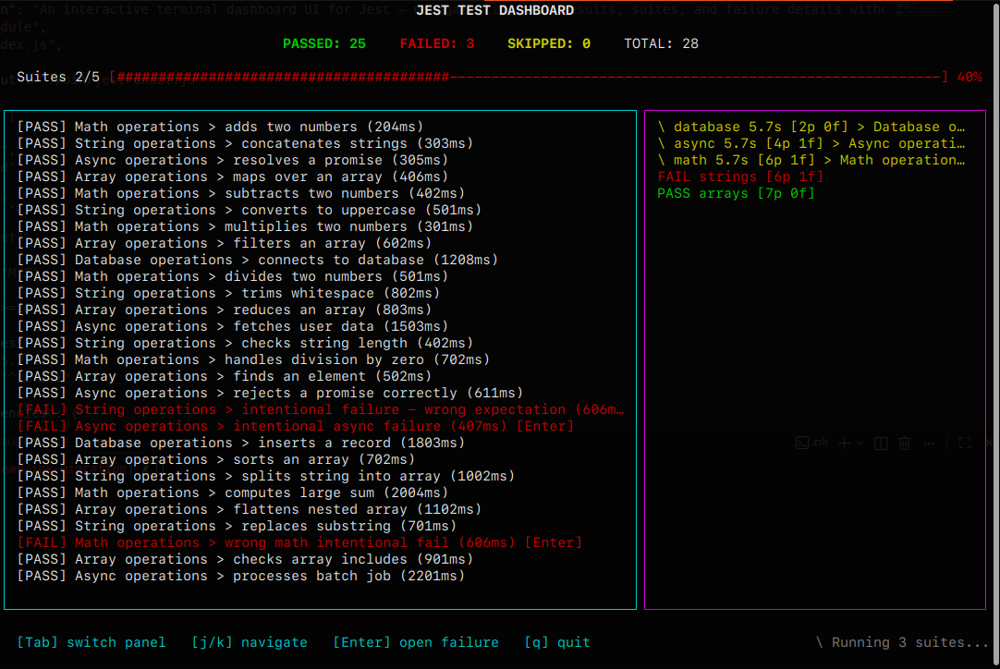
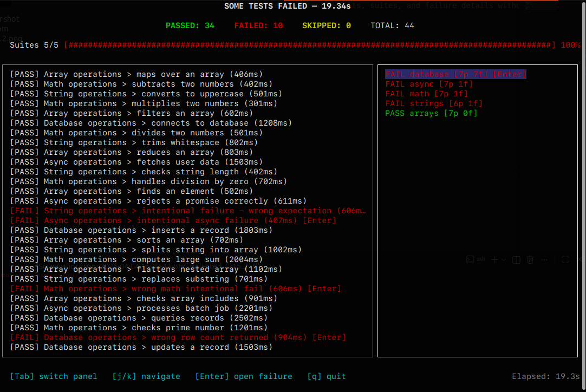
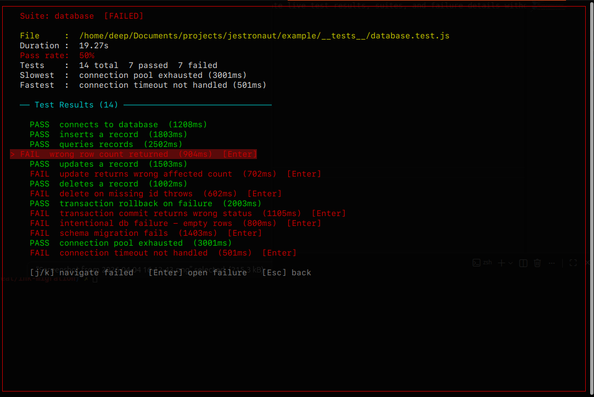
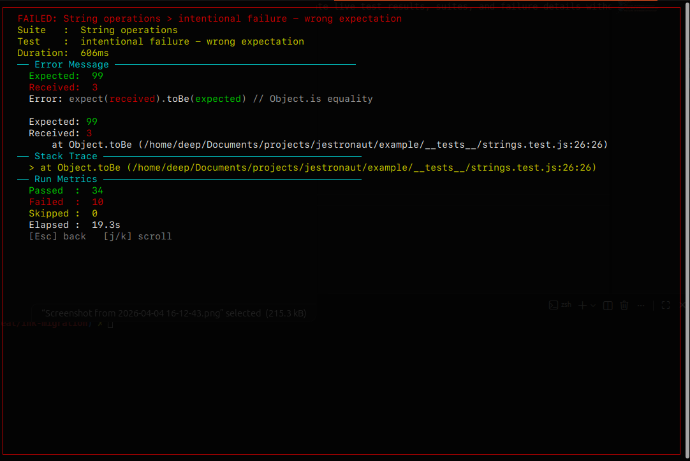

An interactive terminal dashboard that replaces Jest's wall of text. Live results, keyboard navigation, failure drill-down — all in your terminal.

See it in action
Navigate dashboards, suite breakdowns, and failure details — all from the keyboard.

Live updates as files change — suites re-run automatically without leaving the dashboard.

Full breakdown of any suite — press Enter on a suite to open it, then j/k to jump between failures.

Full error message, expected/received diff, and stack trace in a scrollable overlay. Press Esc to go back.
Why Jestronaut
Stop reading scrolling walls of text. Start navigating your tests.
Watch suites complete in real time with animated spinners and instant result updates — no page refresh, no scroll.
Arrow keys, Tab, Enter. Browse suites and results without touching the mouse. Full help overlay with ?.
Open any failing test for a scrollable overlay showing the full error and stack trace — right inside the dashboard.
Press r to instantly re-run only failing tests. No manual command needed.
Colors for pass, fail, skip, and running states. Consistent and readable at a glance.
One line in jest.config.js and you're done. No plugins, no wrappers, no extra setup.
Quick Start
Three steps. No configuration beyond one line.
npm install --save-dev jestronaut
jest.config.js// jest.config.js module.exports = { reporters: ['jestronaut'], watchPlugins: ['jestronaut/watch-plugin'], // watch mode keybindings };
npx jestronaut
Or set it as your npm test script — the binary suppresses raw Jest output so only the dashboard is shown.
Free, open source, MIT licensed. Works with Jest 27, 28, and 29.